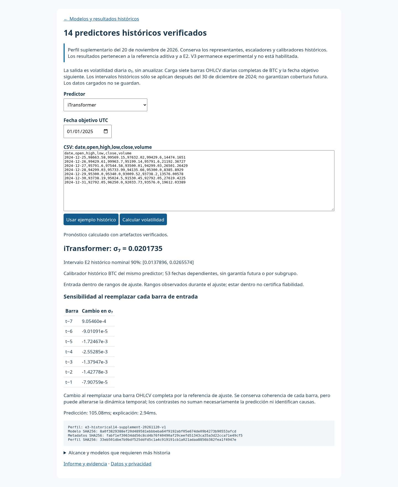
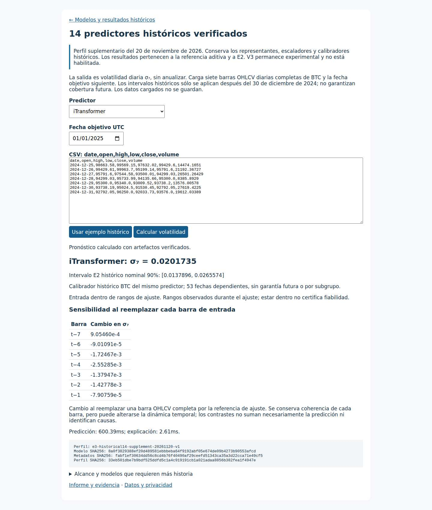

10 Bloque F Despliegue en Render#
Estado actual: aceptación pública aprobada para Render feb83dbc08197bde7076857bd8ff475de197efd2, con clientes de cinco y catorce modelos. La URL es https://deeplearning-e3-dashboard.onrender.com, y la ampliación está en perfil14. La sección 10.10 conserva el despliegue real, recibos, fallos anteriores y capturas. Los apartados previos documentan sus cortes históricos; el SHA de Render se distingue del que publica este libro.
El servicio se creó desde el blueprint de este repositorio. Ese enlace abre la configuración de Render y requiere la cuenta del propietario; es el panel de creación, distinto de la URL de la aplicación. El archivo solicita el plan free, runtime Docker y autoDeploy: false; las capturas muestran Docker y Free. No se declara contratación de un plan de pago ni capacidad remota medida.
El objetivo de cierre es verificar esa URL con Contexto, EDA y Modelos, cinco ONNX en CPU y doce sistemas precalculados. El capítulo 9 conserva la implementación y sus límites. El deployment_readiness.json histórico mantiene sus bytes y el estado anterior a la creación; la observación de creación y construcción conserva el corte de las capturas. Ninguno acredita el funcionamiento de la actualización actual. Como autoDeploy: false, antes de probarla se requiere Manual Deploy → Deploy latest commit y conservar el SHA efectivo mostrado por Render.
10.1 Pasos del perfil original y antecedentes de despliegue#
1. Conservar la aplicación local verificada#
python app.py inicia la aplicación local en 127.0.0.1:8050, con use_pages=True; server = app.server es la entrada WSGI de Gunicorn. El perfil vigente pasó 29 pruebas de software, seis recorridos de navegador con 36 comprobaciones y cinco predicciones dentro del contenedor, con intervalos y explicaciones. Se publican el log unitario, la aceptación del navegador y el recibo del contenedor. No son una certificación de Render ni una reproducción integral independiente de la campaña científica.
El cliente de humo histórico recorrió las tres páginas contra Gunicorn y el contenedor local, y ejecutó una predicción con explicación para cada uno de los cuatro ONNX de aquel perfil, sin entrenamiento ni recalibración. Sus recibos conservan ese alcance y sus bytes; la aceptación de cinco modelos usa la versión V2 descrita abajo:
2. Mantener Python, dependencias y contenedor reproducibles#
La vía implementada y probada es Docker, con Python 3.12.14 y la imagen base fijada por digest en Dockerfile. requirements.txt incluye las 40 versiones exactas del lock de ejecución; entre ellas Gunicorn 23.0.0 y ONNX Runtime 1.23.2. El runtime excluye Torch, TensorFlow, JAX, Playwright y las herramientas de entrenamiento; el cliente de humo utiliza el lock de desarrollo separado.
El contenedor copia únicamente código de servicio, datos admitidos y los ONNX verificados; ejecuta el proceso como UID 10001, sin privilegios. Su comando efectivo es:
gunicorn --bind "0.0.0.0:${PORT:-8050}" --workers 1 --threads 1 --timeout 120 app:server
Render suministra PORT; Gunicorn escucha en 0.0.0.0. El proceso usa un worker y un hilo, CPUExecutionProvider, ejecución serial y una única sesión de modelo residente bajo demanda. El cambio de modelo desaloja la sesión anterior. No existe una sesión ONNX global creada al importar la aplicación.
La prueba de la imagen conservada en docker_verification.json utilizó un límite local de 512 MiB y un CPU, sin OOM, y observó un pico próximo a 186 MiB durante ese recorrido. Ese perfil local no demuestra la memoria, concurrencia o capacidad del plan vigente de Render. Python 3.11.9 y los dos hilos del ejemplo de la guía no son el perfil medido aquí.
La actualización de cinco modelos conserva por separado su construcción Docker y su verificación de ejecución: usuario 10001, sistema de archivos de sólo lectura, sin red y con capacidades adicionales retiradas. Pasaron cinco inferencias con el CSV fijo, intervalos y siete oclusiones por predictor, sin Torch. El máximo error frente a las salidas congeladas fue 4,8394×10⁻⁹ σ₇. Esta prueba nueva no midió memoria pico ni concurrencia; no reutiliza como propia la cifra del perfil anterior.
3. Versionar código, artefactos y metadatos#
Los cinco ONNX conservan los pesos publicados de la semilla representativa 271801. Sus archivos pesan entre 3319 y 165263 bytes y no requieren Git LFS. TSMixer se añade mediante artifacts/e3_serving_extensions_v2/, sin alterar los cuatro artefactos históricos. Los metadatos documentan preprocesamiento, semilla, escala, versiones, integridad y prueba de ida y vuelta. La paridad sobre 608 fechas usa tolerancia absoluta de 1e-6 en unidades originales de σ₇; TSMixer también se comprobó en 53 ventanas de calibración. El humo sobre un ejemplo no sustituye esas pruebas.
La aplicación verifica hashes y usa un registro permitido de modelos. No acepta rutas, URLs o pesos del usuario, ni reajusta normalización o calibradores con el CSV. Los doce sistemas precalculados se distinguen en la matriz de capacidades: nueve redes ya exportadas y verificadas offline, pendientes de habilitación en este perfil y tres clásicos justificados por necesitar más historia o estado que siete barras. No se atribuye a las nueve redes un exceso de recursos sin medirlo. Si se añaden pesos mayores, su almacenamiento inmutable, descarga, licencias e integridad deberán documentarse antes de habilitarlos. Las condiciones de redistribución de datos y la licencia propia mantienen su estado en las fichas; no se inventa una licencia al desplegar.
4. Conservar la configuración del Web Service creado#
La creación ya se observó en la cuenta del operador. Para reconstruir o revisar su configuración se conserva el enlace al blueprint, con el repositorio y la rama main. La configuración versionada solicita:
services:
- type: web
name: deeplearning-e3-dashboard
runtime: docker
plan: free
dockerfilePath: ./Dockerfile
healthCheckPath: /healthz
autoDeploy: false
envVars:
- key: PYTHONUNBUFFERED
value: '1'
Con runtime Docker, Render construye Dockerfile y usa su CMD; no se añade a la vez un buildCommand de Python nativo. autoDeploy: false exige una acción explícita del propietario para incorporar los cambios. Después de publicarlos en GitHub se debe elegir Manual Deploy → Deploy latest commit, esperar Live y anotar el SHA efectivo de 40 caracteres y su log de construcción/arranque. Sólo después se ejecuta el cliente CPU de comprobación desde Colab o un entorno de desarrollo. No necesita GPU ni vuelve a entrenar.
Antes de confirmar se deben consultar las condiciones actuales de servicios gratuitos, Docker, blueprints y healthchecks. La selección del plan del archivo no acredita disponibilidad, gratuidad o límites de una cuenta concreta. Esta revisión no activó recursos de pago.
5. Verificar construcción, arranque y URL pública#
El log debe mostrar instalación correcta, arranque WSGI y el healthcheck /healthz con status=ok, service=e3-dashboard y 17 sistemas. La actualización añade source_commit y source_commit_source: expone únicamente un SHA válido de 40 caracteres de RENDER_GIT_COMMIT, o de APP_SOURCE_COMMIT en verificaciones controladas; si no hay uno válido, devuelve null. Se conservarán URL HTTPS, identificador del servicio, SHA efectivo, fecha y configuración. La espera hasta que el servicio responda debe medirse; sólo se llamará «arranque frío» si se acredita el estado previo de inactividad.
Se comprobarán navegación y callbacks, disponibilidad de artefactos, recuperación ante errores, carga y desalojo de modelos, latencia completa y coste de explicaciones. Una entrada inválida no debe detener la aplicación, revelar trazas internas o producir un valor cero de sustitución. La aceptación local del capítulo 9 ya cubre esas entradas; su funcionamiento público deberá contrastarse sobre la versión desplegada.
El ejemplo Softmax de la guía corresponde a clasificación. Este problema pronostica σ₇ continua con h=1: el servicio aplica la escala guardada exactamente una vez y no convierte la salida en probabilidades. MLP16, LSTM32, GRU32 y TSMixer conservan su intervalo nominal heredado del 90 %. E3 adopta el intervalo posterior nominal del 90 % del mismo predictor, con q verificado y aplicabilidad después del 30 de diciembre de 2024. La interfaz identifica su cobertura individual histórica 94,08 % y la de 2026Q1: 85,56 %, sin garantía temporal o por subgrupo. El capítulo 9 y las notas de adopción delimitan esa calibración; no se atribuye una media de semillas a un intervalo individual. Cada oclusión es un contraste local y no una explicación causal o una descomposición aditiva garantizada.
6. Ejecutar el guion de humo contra la URL real#
El cliente vigente es experiments/e3_cierre_integral_20261118/acceptance/smoke_render_v2.py: verifica los cinco modelos, la calibración posterior E3, las huellas visibles y el commit declarado por el servicio. El cliente anterior se conserva sin modificar como smoke_render.py histórico y su procedimiento histórico; sus cuatro referencias no describen la aceptación actual. Playwright y Chromium pertenecen al cliente CPU de comprobación, nunca al servicio.
V2 también pasó una ejecución local real contra Gunicorn: tres rutas, cinco predicciones con sus intervalos, siete oclusiones por modelo y tres huellas de recursos, sin errores. Su contexto de ejecución distingue el SHA suministrado al servidor para comprobar el contrato del estado real del checkout. Esta prueba no demuestra que aquel SHA esté desplegado en Render y mantiene ambos indicadores de aceptación pública en false.
El cliente y sus referencias deben proceder del mismo checkout publicado que se acaba de desplegar. Define SHA_RENDER con los 40 caracteres hexadecimales del despliegue efectivo, cotejados con el log de Render; no reutilices el SHA antiguo de las capturas. Tras el despliegue manual y el estado Live, ejecuta:
python experiments/e3_cierre_integral_20261118/acceptance/smoke_render_v2.py \
--url https://deeplearning-e3-dashboard.onrender.com \
--deployment-commit "$SHA_RENDER" \
--output work/render-public-smoke/report.json \
--screenshots-dir work/render-public-smoke/captures
Comprobación automatizada |
Criterio fijado antes de medir |
|---|---|
Disponibilidad inicial |
Healthcheck correcto antes de 180 s; conservar intentos y estados transitorios. |
Tres páginas y callbacks |
HTTP 200; navegación y componentes completos antes de 30 s por página; EDA vacía las seis figuras con la misma máscara. |
Registro visible |
Diecisiete filas en Modelos y ejecución de los cinco identificadores habilitados. |
Integridad visible |
Ficha del modelo, declaración de datos y CSS iguales por SHA-256 al checkout del cliente. |
Versión declarada |
|
Cada ONNX en vivo |
Callback real HTTP 200, salida finita y no negativa, caso fijo |
Incertidumbre y explicación |
Nominal del 90 % en los cuatro E2; etiqueta posterior E3, q y límites correctos para el caso; siete sensibilidades finitas y límites de interpretación visibles. |
Respuesta completa |
Antes de 30 s por predictor, incluyendo red, explicación y renderizado; registrar aparte la latencia CPU sin explicación. |
Errores tras estar listo |
Sin HTTP 5xx internos, errores de consola ni excepciones no capturadas de navegador. |
El caso fijado corresponde al objetivo 2025-01-01, elegido por posición cronológica y no por rendimiento. En el contenedor del perfil histórico de cuatro ONNX, las consultas completas incluida explicación tardaron respectivamente 1.792, 326, 250 y 256 ms para MLP16, LSTM32, GRU32 y E3. Su mayor diferencia frente al pronóstico guardado fue menor que 3.86e-7; la interfaz muestra seis decimales. Estas observaciones conservan ese entorno y esos cuatro modelos: no son percentiles, mediciones de TSMixer ni resultados de Render. El recibo nuevo de cinco inferencias citado arriba tampoco reemplaza la medición pública del V2.
El guion devuelve código de salida distinto de cero ante fallo y conserva un JSON con tiempos, estados HTTP, errores, huellas y resultados. La admisión de URL exige un origen HTTPS nombre.onrender.com; loopback requiere --allow-local y nunca puede producir render_public_smoke_passed=true. El estado Live y el SHA introducido por el operador no sustituyen ejecutar las comprobaciones y conservar el recibo aprobado.
La identidad de versión conserva un límite explícito: V2 exige que el SHA autodeclarado por /healthz coincida con el del operador y contrasta las huellas de ficha, datos y CSS con las referencias locales. Esa concordancia refuerza la trazabilidad, pero no es una atestación criptográfica de todo el código remoto; remote_commit_identity_verified sigue en false. Deben anexarse el log de Render, las huellas y el recibo completo, sin confundir esos niveles de evidencia.
En ese corte, la URL era https://deeplearning-e3-dashboard.onrender.com y el operador comunicaba Live. En aquel corte de preparación, la actualización permanecía SIN RECIBO PÚBLICO APROBADO; el cierre posterior se verifica en 10.10. Los recibos locales conservan render_public_smoke_passed=false; no se dispone de una verificación pública de esta versión que pueda sustituirlos. El paso pendiente es desplegar manualmente el último commit, cotejar su SHA y ejecutar el cliente CPU V2 sobre esa URL. Un error o falta de concordancia se conserva como tal y no se convierte en aprobación por declarar Live.
Recursos del plan y contingencia#
La suspensión por inactividad, el tiempo de espera, la memoria/CPU efectiva y la persistencia deben contrastarse con el plan actual y medirse en el servicio real. El cliente de navegador no puede deducir memoria pico remota o concurrencia. Si un modelo excede los recursos disponibles, se documentará su modalidad precalculada o una compresión validada con paridad y pérdida de métrica frente al margen heredado; no se reentrena dentro del servidor ni se activa automáticamente un plan mayor.
Antes de la sustentación se abrirá la URL con antelación, se repetirá el humo y se grabará un vídeo breve de esa versión, con fecha y capturas. Si falla el servicio durante la exposición, se explicará el incidente y el alcance del respaldo. Las capturas locales del capítulo 9 y un vídeo futuro no sustituyen una URL Render funcional ni un recibo público aprobado. El capítulo 12 distingue el cierre posterior de esos antecedentes y el capítulo 13 distingue la demostración real de la contingencia.
10.2 Comprobación externa y aceptación preparada para el cierre#
La comprobación del 19 de noviembre de 2026, hora de Bogotá, verificó las referencias locales del cliente V2 existente: 17 archivos para cinco ONNX, metadatos y el intervalo posterior E3, sin inferencia. Sus blobs se cotejaron con la fuente publicada. La sonda de disponibilidad ejecutó el helper wake_service de ese cliente durante diez segundos. No ejecutó el navegador ni obtuvo HTTP del servidor de origen; no sustituye el recorrido público completo de 180/30/30 segundos.
Las consultas públicas fallaron en el túnel del proxy del entorno con 403. Ese fallo corresponde al acceso del cliente y no permite afirmar que Render esté caído. En aquel corte se mantenía aceptación pública sin acreditar, junto con Live comunicado por el operador; el cierre posterior figura en 10.10. Entonces tampoco se disponía del SHA efectivo confirmado en su log; no se adivinó a partir de main ni de la autodeclaración de /healthz.
Queda preparado el helper de aceptación CPU para Colab y su procedimiento completo. Tras Manual Deploy, el propietario copia el SHA de 40 caracteres del despliegue y lo introduce en el helper. Éste obtiene las referencias de esa versión, verifica los clientes revisados y ejecuta el V2 original, con sus tres páginas, cinco predicciones, intervalos, explicaciones y huellas. El entorno de Playwright es separado, no requiere GPU y no reentrena ni recalibra.
El ZIP de salida conserva recibo, contexto y capturas; debe persistirse antes de cerrar Colab. Sólo su aprobación permite registrar el humo público. La concordancia de SHA autodeclarado conserva el límite de no ser una atestación completa del código remoto. El plan del servicio y los pesos/calibradores permanecen como estaban; este cierre no contrata recursos ni convierte el catálogo histórico en el de la auditoría nueva.
La celda CPU fijada al código revisado solicita el SHA del log de despliegue y verifica el helper antes de ejecutarlo. También se conserva su código de arranque para pegarlo directamente en Colab. Guarda el ZIP de salida y súbelo a GitHub antes de cerrar la sesión; el helper no promete un guardado remoto que no realiza.
10.8 Comprobación pública ejecutada y paso del propietario#
La ejecución externa en GitHub Actions, ligada al commit 6aca875bd94b0a1c3457b5b8586f14a4d0e16dbe, obtuvo salud HTTP 200 de Render tras once intentos dentro del presupuesto de 180 segundos. El JSON observado declara 17 sistemas y estado ok, pero carece de source_commit y source_commit_source. No se sustituyó ese dato por el SHA del libro ni por una declaración ficticia del operador. El cliente V2 no inició las predicciones: not_started_identity_unavailable, aceptación pública false.
El reporte público completo distingue origen real de los bloqueos previos del proxy. No demuestra que el servicio caiga ni que sus cinco predictores coincidan con la versión local. Conserva respuestas, fecha, cliente de referencia, hashes y alcance. Los pesos/calibradores del perfil operativo siguen intactos; las nueve exportaciones offline y V3 experimental no se activan por publicar este informe.
En aquel corte se preparó el contrato de salud que informa RENDER_GIT_COMMIT y las cinco referencias del cliente. El procedimiento entonces pendiente indicaba seleccionar Manual Deploy → Deploy a specific commit, usar el SHA de 40 caracteres de esta publicación, esperar Live y ejecutar el workflow público mediante Run workflow. Debe conservar el SHA realmente observado y el recibo V2: páginas, callbacks, cinco predicciones, intervalos aplicables, siete oclusiones por modelo, errores de consola/HTTP y huellas. Los casos OOD y CSV inválidos no forman parte de ese cliente V2; el cliente del perfil14 los comprueba por separado. Ese despliegue no se ejecutó desde esta auditoría. Están preparados los pasos mínimos y una celda CPU con preservación de evidencia; preparación no significa ejecución.
La misma ejecución consultó el registro público de Zenodo, su API y el resolvedor: los tres devolvieron HTTP 404 desde origen; API: «The persistent identifier is not registered», resolvedor: «DOI Not Found». En ese momento no había publicación verificable de 10.5281/zenodo.24356217. La reserva y el borrador privado aportados antes permanecen como antecedentes; no se confundieron con una publicación ni se solicitó acceso a sus credenciales.
10.9 Perfil14 opcional: integración y aceptación local verificadas#
Se implementó un perfil versionado que integra las catorce redes históricas, ensamblando las nueve exportaciones aceptadas sin cambiar sus bytes, pesos, escaladores o cuantiles. e3_profile14.py añade /perfil-14 y su API; conserva las vistas originales y sus cinco predictores. El Dockerfile habitual y los siete archivos raíz congelados permanecen intactos. Dockerfile.profile14 y render.profile14.yaml permiten optar por la ampliación. V3 no forma parte de este catálogo ni recibe el calibrador de la aditiva.
Las comprobaciones locales pasaron los catorce modelos por API y navegador, tres rutas históricas con callbacks EDA, catorce guardas temporales de calibración, catorce casos OOD y diez errores seguros; no se observaron errores JavaScript. El cliente V2 original también pasó sus cinco modelos y tres páginas. Las 5949 comprobaciones históricas de los nueve adaptadores tuvieron error máximo 3,09926×10⁻⁷ sigma7, dentro de 10⁻⁶. Se verificaron las huellas de modelos y metadatos, intervalos con q original E2 o posterior E3, y oclusión de siete barras. Las nuevas mediciones son replays y aceptación de ingeniería, no nuevas fechas confirmatorias o evidencia de superioridad.
Se midió una envolvente local de 198,5 MiB de memoria del contenedor frente al límite de 512 MiB, incluyendo proceso maestro, trabajador y caché de archivos, con un CPU lógico y un trabajador/hilo. Cuatro clientes concurrentes completaron las catorce solicitudes bajo la cola de ese trabajador. Esto no mide la capacidad o latencia de Render, energía o FLOPs. El perfil mantiene una sesión adicional en caché; las vistas antiguas conservan su caché propia. No se excluyen redes por una falta de recursos no medida.
Las pruebas finales usan la imagen inicial construida con el Dockerfile optativo y las últimas fuentes montadas en sólo lectura; se conserva el contexto exacto y las incidencias de construcción. El SHA inyectado localmente identifica el baseline declarado más el suplemento con hashes, no un despliegue público del código nuevo. El workflow CPU del perfil14 construye la imagen exacta de su commit y repite contratos, adaptadores, cliente histórico y navegador. Su resultado debe consultarse por SHA, separado del éxito de construcción del libro.
Los tres clásicos conservan su disponibilidad histórica. Persistence necesita el valor objetivo anterior, SeasonalNaive el objetivo en su rezago y ARIMA la historia/estado de ajuste: siete barras OHLCV no determinan esos insumos con su definición original. No se sustituyen por reglas de siete barras que cambiarían el modelo; un futuro formulario de historia deberá declarar ese contrato.
La comprobación de 20 de noviembre de 2026, 12:46 Bogotá, obtuvo Render HTTP 200 tras doce intentos, pero sin source_commit; en aquel corte la aceptación pública quedó en not_started_identity_unavailable. No se generaron capturas públicas ni se atribuyó el SHA del libro a Render. Esa auditoría no modificó el servicio. El Manual Deploy y los clientes públicos se ejecutaron después y aprobaron en 10.10; las instrucciones siguientes conservan su carácter de preparación. Los pasos y comandos están en el README del perfil y las acciones del propietario.
Evidencia: aceptación local final, cliente histórico de cinco modelos, 5949 verificaciones de adaptadores, recursos, contexto de ejecución y sondeo público nuevo.


Figura 12 Captura local del perfil14. No es una captura de Render ni prueba de su versión desplegada. Se conservan también las capturas de móvil y de la interfaz histórica.#
10.10 Cierre público de Render H: cinco y catorce predictores#
La persona autora aplicó Dockerfile.profile14 y realizó Manual Deploy del commit feb83dbc08197bde7076857bd8ff475de197efd2. La captura de plataforma identifica el despliegue dep-dc09ibcipgvc73dm5ue0 como Live. La consulta pública posterior confirmó HTTP 200, aquel SHA mediante RENDER_GIT_COMMIT, catorce predictores en /perfil-14, cinco en las vistas originales y V3_enabled=false. Ese identificador corresponde al servicio; la publicación de este libro tiene su propia verificación en GitHub Pages.
La ejecución pública aprobada, job 136514212866, utilizó el runner 63b2220ead51e5f755c421a0253644390c0a94e6 y los clientes sin cambios del código H. Empezó el 20 de noviembre de 2026 a las 14:22:40 de Bogotá y terminó a las 14:23:35,699. El cliente original pasó con scope=public_Render_browser_smoke, cinco modelos y tres páginas. El ampliado pasó con scope=public_acceptance, catorce modelos por API y catorce por navegador. El wrapper exige la aprobación de ambos y dejó public_Render_acceptance_passed=true.
Comprobación sobre la URL pública |
Resultado y alcance |
|---|---|
Identidad y catálogo |
SHA H, procedencia |
Cliente original |
Cinco predictores, tres páginas, callbacks, intervalos, explicación de siete barras y huellas de recursos aprobados. |
Cliente ampliado |
Catorce predicciones API y catorce de navegador; catorce casos OOD, catorce guardas de fecha y diez entradas inválidas aprobadas. |
Paridad |
Máximo error API crudo 1,51446×10⁻⁸ sigma7 en catorce redes; máximo error de la salida mostrada a seis decimales 4,39308×10⁻⁷ en el cliente de cinco. Son comparaciones distintas, ambas dentro de 10⁻⁶. |
Tiempos del ensayo |
Máximo API completo 993,25 ms; navegador ampliado 1200,94 ms y cliente original 2464,27 ms, incluyendo red, explicación y representación. No son percentiles, tiempos de entrenamiento o garantías de servicio. |
Navegador y capturas |
Cero errores JavaScript y de consola en los recorridos registrados; seis capturas públicas recuperadas y verificadas por SHA256. |
El historial de fallos se conserva. Una sonda anterior quedó bloqueada por cuota de la API GitHub sin autenticar, antes de ejecutar los clientes. En el primer ensayo de ambos clientes, el de catorce aprobó; el original llegó a navegar tres páginas, pero una fixture CSS local ausente bloqueó sus comprobaciones de modelos. Registró cero modelos comprobados y el wrapper global falló. No fue un fallo de Render ni un ensayo que no hubiera abierto navegador. El runner corrigió el paquete de referencias, sin cambiar los clientes, sus guardas o el servidor, y el segundo ensayo aprobó. No se borró ni renombró la primera ejecución como exitosa.
Los pesos, escaladores y cuantiles conservan sus versiones: E2 utiliza sus cuantiles originales y la aditiva E3 el calibrador posterior. V3 no recibe calibrador ni se promueve. El ensayo empleó ventanas históricas y casos de prueba explícitos; ejecutó cero nuevos entrenamientos, recalibraciones, reexportaciones o uso de GPU, y no abrió fechas de evaluación científica. Se conservan los 796 trabajos de la aditiva, los treinta ajustes V3 y el resultado adverso de atom_crps. Esta aceptación es de ingeniería y no acredita R1, R2, R3 o reproducción humana integral.
Descargas: resumen público, recibo combinado aprobado, cliente original de cinco, cliente público de catorce, expediente e intentos conservados y matriz global actualizada.
La concordancia del SHA informado y de las huellas refuerza la trazabilidad, sin ser una atestación criptográfica de cada byte remoto. La prueba no mide RAM, energía, concurrencia remota o disponibilidad sostenida. Los 198,5 MiB del contenedor local de 10.9 no se atribuyen a Render. Derechos/licencia, DOI publicado, defensa del estudiante, reproducción humana y R3 conservan sus estados. Cambiar sólo esta documentación no requiere otro Manual Deploy del servicio H; un cambio futuro de código o artefactos requerirá identificar y aceptar su nueva versión.


Figura 13 Captura del origen público Render durante la ejecución aprobada del 20 de noviembre de 2026. Su manifiesto conserva el SHA256; se distingue de la captura local de 10.9.#